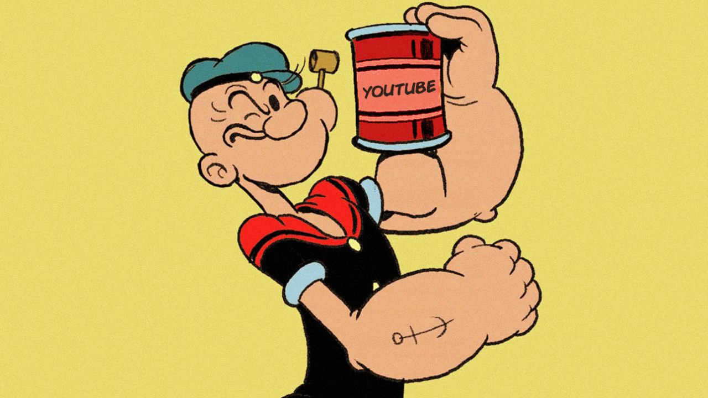

Desde o surgimento do cinema, desenhos animados tem encantado pessoas de todas as idades. Muitos desses desenhos sobrevivem de geração em geração, ganhando reformulações para se adaptar aos gostos do público atual. Devido a isso, resolvemos elencar os 7 personagens de desenhos animados mais antigos que existe. São personagens que ainda hoje fazem sucesso e que chama a atenção pela “idade” que possuem.
Tom e Jerry
A dupla de rivais mais famosa dos desenhos animados está unida desde 1940. Criados pelos lendários William Hanna e Joseph Barbera em 1940, eles possuem 78 anos e ainda hoje figuram em novos desenhos animados produzidos pelo Cartoon Network.
Mickey Mouse
O camundongo mais famoso do mundo foi criado por Walt Disney em 1928, fazendo com que ele tenha nada menos que 90 anos. Em sua estreia no cinema também esteve a namorada do personagem Minnie Mouse, que tem a mesma idade.
Flintstones
Fred e Wilma Flintstones surgiram na televisão em 1960 e possuem cerca de 58 anos de existência. Assim como Tom e Jerry, foram criados por William Hanna e Joseph Barbera. O desenho animado da família ainda foi a primeira produção animada a ser transmitida no horário nobre da televisão.
Patolino
O famoso pato rabugento da Warner tem cerca de 81 anos. Ele começou como um personagem bastante biruta nos desenhos, mas aos poucos, foi ganhando uma nova personalidade em contraponto ao Pernalonga.
Pernalonga
Ele foi criado um ano depois de seu colega, Patolino, e tem cerca de 80 anos. É um dos personagens mais famosos da Warner e por muitos anos, foi o mascote do estúdio.
Gato Félix
O mais antigo personagem desta lista. Acredite ou não, mas Félix foi criado em 1919 e tem 99 anos. Foi criado pelos cartunistas Otto Messmer e Pat Sullivam e apareceu em diversos filmes.
Popeye
O famoso marinho que adora espinafre surgiu em 1933. Se fosse uma pessoa real, ele teria 85 anos. Nos últimos anos, a Sony tentou levar o personagem aos cinemas em um novo filme animado, mas os estúdio parece não ter seguido com o projeto.